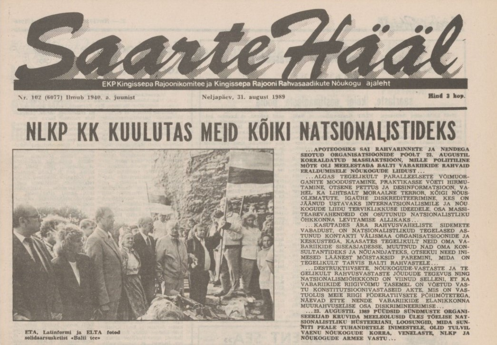
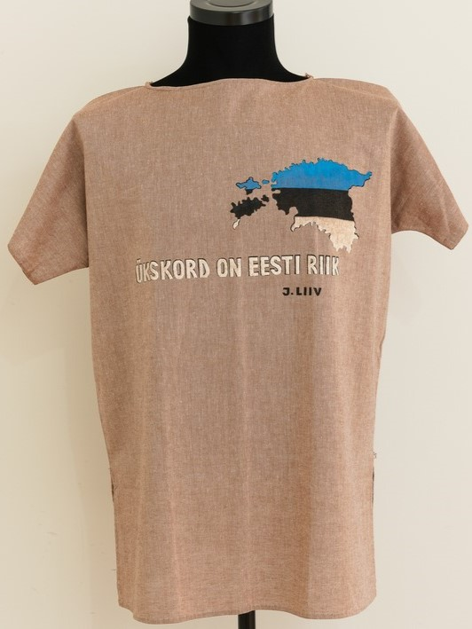

{kind=link}
Saarte Hääl 15.08.1989
Väljalõige 15. augustil 1989. aastal Saarte Hääles ilmunud Rahvarinde üleskutsest
Balti kett on rahvuslik ajaloosündmus, mida meenutatakse triumfina tänapäevani. Kolme Balti riigi rahvad tulid kokku, et panna maailm nägema ülekohut, mis oli neile osaks saanud Molotovi-Ribbentropi pakti tõttu. Sellel tähtsal päeval ei puudunud ketist ka Eesti suurima saare elanikud, keda oli osalemas pea tuhat. Kohale tulnud saarlastele, hiidlastele ja Haapsalu rahvale eraldati peaaegu 4 kilomeetri pikkune maanteelõik Rapla lähistel.
15. augusti Saarte Hääle väljaandes avaldati Rahvarinde proklamatsioon registreeruda 23. augustil formeeritava Balti riikide inimketi Saaremaa lülisse. Vaid nädalaga kogunes Saare- ja Muhumaalt üle tuhande soovija. Kohaliku rajooni täitevkomitee avaldas mõni päev hiljem Saarte Hääle väljaandes soovituse kohalikel ettevõtetel ja asutuste juhtidel leida võimaluse “Balti tee” solisaarsusketis osalevate inimeste töölt selleks päevaks vabastamise. Saaremaa Rahvarinde juhtkonna liige Valter Hommik agiteeris 23. augustit pühitsema lausa üldise protestipäevana, nimetades seda kõige süngeloomulisemate tagajärgedega daatumiks Baltikumi ajaloos: “Teatagem sellel päeval kindlameelselt – me ei ole oma alandusi unustanud, me ei ole oma maa lagastamisega leppinud ja ME SAAME ISESEISVAKS.” Mitmes piirkonnas algasid ulatuslikud ettevalmistused aga juba varem kui 15. august. Esiteks oli vaja korraldada transport – auto või töökollektiivi buss. Toonane ajaleht Saarte Hääl andis ülevaate, kuidas reis Balti ketti korraldati: 18. augusti hommiku seisuga oli registreeritud 19 isiklikku sõiduautot ja 4 bussi, mis vedasid 150 inimest, ent oli ka inimesi ilma transpordita. Samuti oli teates kirjas, et külastajad ei tohiks unustada kaasa võtta akuutseid plakateid, riigilippe ja muud rahvuslikku atribuutikat. Mõeldi samuti pisiasjadele, nagu söögi ja joogi ning töökorras fotoaparaatide kaasa pakkimine. Kokkuvõtlikult on Balti kett suurepärane näide sellest, kui oluline on raskel ajal ühtselt solidaarsust tunda.
 Nõukogude okupatsiooni vältel oli Saaremaa meretagune paik, kuhu igaüks niisama minna ei saanud. Lääne-Eesti saartel valvasid nõukogude sõjaväelased liidu läänepiiri pea 1945. aastast saadik. Virtsust võis küll praami peale saada, ent Kuivastus küsis piirivalvur, mis saabujal piiritsooni asja oli. Kuivastu sadama piiripunkt oli ka 1989. aasta suve lõpul kindlalt omal kohal, kuigi julgeti juba sinimustvalgeid lippe lehvitada ning vabaduse idee polnud enam võõras. "Võõrastel” oli võimalik Saare maakonda reisida 5 rubla maksnud külastuskaardiga, mis andis külalisele õiguse reeglina kuni kuu aega Saaremaale sõiduks. Sadadel saarlastel aitas 80ndate aastate lõpul ja 90ndate algul raudset eesriiet ületada Kuressaares elav Mihkel Lutsenko, kes hankis Soome, Rootsi või mõne muu välisriigi viisa. Varem oli Lutsenko juhtinud Riikliku Julgeoleku Komitee ehk KGB Kuressaare osakonda. Viisade hankimisega tegelesid mandril maavalitsuste välissuhete nõunikud, Saaremaal aga jättis maavalitsus viisamajanduse Lutsenkole.
Nõukogude okupatsiooni vältel oli Saaremaa meretagune paik, kuhu igaüks niisama minna ei saanud. Lääne-Eesti saartel valvasid nõukogude sõjaväelased liidu läänepiiri pea 1945. aastast saadik. Virtsust võis küll praami peale saada, ent Kuivastus küsis piirivalvur, mis saabujal piiritsooni asja oli. Kuivastu sadama piiripunkt oli ka 1989. aasta suve lõpul kindlalt omal kohal, kuigi julgeti juba sinimustvalgeid lippe lehvitada ning vabaduse idee polnud enam võõras. "Võõrastel” oli võimalik Saare maakonda reisida 5 rubla maksnud külastuskaardiga, mis andis külalisele õiguse reeglina kuni kuu aega Saaremaale sõiduks. Sadadel saarlastel aitas 80ndate aastate lõpul ja 90ndate algul raudset eesriiet ületada Kuressaares elav Mihkel Lutsenko, kes hankis Soome, Rootsi või mõne muu välisriigi viisa. Varem oli Lutsenko juhtinud Riikliku Julgeoleku Komitee ehk KGB Kuressaare osakonda. Viisade hankimisega tegelesid mandril maavalitsuste välissuhete nõunikud, Saaremaal aga jättis maavalitsus viisamajanduse Lutsenkole.
Elanike suhetel piirivalvuritega oli suurem kaal kui isiklikul ideoloogilisel raamistikul, kuna kuidagi oli tarvis Muhult Kuivastusse, Lalli randa ja Virtsu bussile saada. Nendest visiitidest tuli muidugi teavitada piirivalvet, kuid mere ääres kedagi enam üldiselt ei küsitletud, kuna ühistransporti polnud peaaegu üldse liikumas. Rutiinsete piirivalve operatsioonide esmane eesmärk oligi kaitsta maismaa rannajoont – saartelt pole teateid piiritsooni kontrollist kõrvalehoidmiste kohta. Üheks põhjuseks võib arvata seda, et põhjakaldal teadsid kohalikud täpselt, millal ja kus valvurid viibivad samas kui saartel see nii selge polnud. Intervjueeritav kohalik, Maidu Varik, tõdes, et Nõukogude okupatsiooni lõpu aegadel saarlastel mingit konflikti sõjaväega ei olnud ning otsest kartust ei olnud. Ühtlasi on Saaremaa muuseumi toonane teadur Tormis Jakovlev täheldanud artiklis “Nõukogude armee Lääne-Saaremaal ja selle suhted kohalike elanikega” Kihelkonna kooli noorte meelsust piirivalve osas: usuti, et kooli juures tegutsenud piirivalvurite noorte sõprade ringis osalemine suurendab nende võimalusi saada piirivalvuriks. Piirivalvet peeti võrreldes tavaarmeega võrdlemisi heaks teenimispaigaks. Füüsilist eraldust tõid välja mitmed intervjueeritud saarlased, üle mere minek ei olnud alati kõigile võimalik ning kauguse tõttu otseselt millegagi kokku ei puututud.
Intervjuu Valter Hommikuga Balti keti eel. Allikas: ERRi Arhiiv
Tolleaegne autobaasi reisijateosakonna juht Asta Leppik meenutab, et paljudes ettevõtetes ja asutustes tahtsid töötajad oma silmaga näha ja kogeda, mida see solidaarsusketi sündmus vabadusvõitluses tähendada võiks. Sellest tingitult oli tellitud meeleavaldusele sõitmiseks palju busse, kuid vaatamata sellele oli nentinud Leppik, et kahjuks kõik soovijad ei mahtunudki busside peale. Saaremaa autobaasi töötajad said sõita meeleavaldusele automajandi uueima bussiga, Ikarus-bussiga.
“See oli tähtsündmus eestlaste, lätlaste ja leedulaste jaoks, kõigi vabadust armastavate rahvaste jaoks, kogu maailma jaoks,” rõhutas Leppik.
Automajandi tollane peainsener Aarne Brokmann rääkis, et kogu sõit sai autobaasi kulu ja kirjadega teoks.
“Inimesed olid ühel meelel. Kedagi agiteerima ei pidanud. Ülev moment oli, kui kõik kätest kinni haarasid ja hõigati “Vabadus!”,” meenutas Brokmann.
Üldine meelestatus oli, et kõikvõimas suur impeerium oli pragunemas ning kõik see sisendas vaid ainult rohkem usku vabaks saamise võimalusse.
Brokmann meenutas kuidas: “Meid filmiti seal igalt poolt. Peade kohal tiirutasid kopterid. Ega ei teadnud, kes nendes istuvad. Üks Dvigateli buss sõitis mööda. Selles oli kaameramees, kes filmis. Dvigatel oli Interrinde keskus. Kõik olid aga rahulikud. Kartma ei löönud keegi.”
Balti ketis käinud Indrek Peili. Pildil on lipp, mis tähtsal sündmusel kaasas oli.
Mari Ausmees meenutab esimesi sinimustvalgeid lippe ning kuidas tema mees oli jätnud koju kirja sõnadega: "Läksin käest kinni hoidma"
Rahvarinnete ja nendega seotud organisatsioonide oodiks võib lugeda 23. augustil toimunud massiaktsiooni – eesmärgiks meelestada Balti rahvaid Nõukogude Liidust lahku lööma. Tegelikkuses algas samaaegselt võimuorganite moodustamine, kasutusele võeti hirmutamine ning ilmselge desinformatsioon. Natsionalistlik tegelaskond on astunud ühendusse välismaa organisatsioonidega, rakendades internatsionaalsete sidemete vabadust. Justkui inimesed läänest saaksid paremini aru sellest, mida on balti rahvastel ilmsi vaja. Laastavalt nõukogude-vastaste ning õigupoolest rahvusvastaste jõudude talitus ja natsionalistlik õhustik on pannud konstitutsioonivastaselt veerema ka vabariikide võimuvankri. 23. augustil üritasid sündmuste korraldajad inimeste meeleolu üles kruttida ehtsa natsionalistliku hüsteeriani. Tuhandetele inimestele peale surutud plakatid olid otseselt suunatud Nõukogude Liidu armee ja režiimi, NLKP ning venelaste vastu.
 50 aastat pärast Stalini ja Hitleri alatut sobingut, mille ohvriks oli ka iseseisev Eesti, ootasid kohalikud Moskvast hoopis teist laadi pöördumist. Avalikkuses säilis lootus, et NSV Liidu kõrgemad võimud mõistavad MRP hukka. Paraku juhtus aga vastupidine, kui NLKP Keskkomitee sisuliselt jäädvustas oma avaldusega pakti igaveseks ajalukku. Eestlastel jäidki seega kahetsusavaldused kuulmata möödunud viiekümne aasta ebaõigluse eest – selle asemel hoiatas NLKP Keskkomitee, et natsionalistlikud liidrid viivad Balti riigid hukatuse äärele. Teadaande ähvardav toon kui ka tervete riikide rühmitamine “internatsionalistideks” või “natsionalistideks” näitavad, kuidas NLKP rahvuspoliitikat määras endiselt väike rühm stalinliku ideoloogia järgijaid. Kõik, mida me soovime, on volitus otsustada Eesti tuleviku üle ja kanda selle eest vastutust.
50 aastat pärast Stalini ja Hitleri alatut sobingut, mille ohvriks oli ka iseseisev Eesti, ootasid kohalikud Moskvast hoopis teist laadi pöördumist. Avalikkuses säilis lootus, et NSV Liidu kõrgemad võimud mõistavad MRP hukka. Paraku juhtus aga vastupidine, kui NLKP Keskkomitee sisuliselt jäädvustas oma avaldusega pakti igaveseks ajalukku. Eestlastel jäidki seega kahetsusavaldused kuulmata möödunud viiekümne aasta ebaõigluse eest – selle asemel hoiatas NLKP Keskkomitee, et natsionalistlikud liidrid viivad Balti riigid hukatuse äärele. Teadaande ähvardav toon kui ka tervete riikide rühmitamine “internatsionalistideks” või “natsionalistideks” näitavad, kuidas NLKP rahvuspoliitikat määras endiselt väike rühm stalinliku ideoloogia järgijaid. Kõik, mida me soovime, on volitus otsustada Eesti tuleviku üle ja kanda selle eest vastutust.
Matkajuht ja toonane maaparandusprojekti töötaja Elmar Aru viibis Balti keti ajal Narvas. Interrinde propaganda oli sealsetele venekeelsetele elanikele oma mõju avaldanud, kuna Aru autokummid lasti tühjaks ja ventiilid visati minema. "Sõiduki kerele oli vene keeles kirjutatud "fašist". Nii reageerisid nemad meie vabaduspüüdlustele," nentis Elmar Aru.

Huvitav vaade sündmustele tuli intervjuust Diana Õunaga, kes vaatas sündmustele tagasi veidikese nukrusega, kuna tunneb, et jäi toimunust kõrvale. Põhjuseks tõi ta välja teadmatuse esimesest Eesti iseseisvusperioodist.
Maidu Variku meenutus "Ükskord on Eesti riik" särgist ning Balti keti järelkajast.
Arne Loorpuu meelsusest Balti keti ümber: "Nüüd on kõik võimalik".
Väljalõige 15. augustil 1989. aastal Saarte Hääles ilmunud Rahvarinde üleskutsest
Balti keti teemaline luuetus, mis ilmus Saarte Hääles 22. augustil 1989. Autoriks Elvi Sirkel
Foto: Enno Raun, Saaremaa Muuseum, SM F 3713:43 F
Foto: Enno Raun, Saaremaa Muuseum, SM F 3779:340 F
Foto: Enno Raun, Saaremaa Muuseum, SM F 3779:350 F
Foto: Enno Raun, Saaremaa Muuseum, SM F 3779:345 F
Foto: Enno Raun, Saaremaa Muuseum, SM F 3779:343 F
Foto: Enno Raun, Saaremaa Muuseum, SM F 3713:44 F
Foto: Enno Raun, Saaremaa Muuseum, SM F 3713:45 F
Foto: Enno Raun, Saaremaa Muuseum, SM F 3713:51 F
Foto: Enno Raun, Saaremaa Muuseum, SM F 3713:50 F
Foto: Enno Raun, Saaremaa Muuseum, SM F 3713:49 F
Foto: Enno Raun, Saaremaa Muuseum, SM F 3779:355 F
Foto: Enno Raun, Saaremaa Muuseum, SM F 3713:48 F
Foto: Enno Raun, Saaremaa Muuseum, SM F 3713:46 F
Meeleavaldusest osavõtjad süütasid teel küünlad. Tegemist on Saaremaa Rahvarinde arhiivist pärineva värvifotoga. Enamik Balti ketist tehtud fotosid olid mustvalged. Foto: Erakogu/Saarte Hääl
Allikas: Erakogu/Saarte Hääl
31. augustil ilmunud Balti keti kohta käiv uudis Saarte Hääles
Foto: Indrek Peil, erakogu. Pilt on tehtud Balti Keti aastapäeval 2021. aastal Peili suvekodus Kihelkonna lähistel Kiirassaares.
Allikas: Eesti Ajaloomuuseum SA, AM _ 32801:1 TE 3146:1
Allikas: Eesti Ajaloomuuseum SA, AM _ 32801:1 TE 3146:1
Saaremaale saamiseks pidi olema Saaremaale reisimiseks luba tõestavat külastuskaarti.
Allikas: HÜVASTI, ENSV! ⟩ 1989/1990: Maailm juba avanes, kuid piiritsooni kõigil veel asja polnud
Foto: Harald Leppikson, Rahvusarhiivi Meediateek, EFA.546.0.176544
(23.08.1989). Balti kett. "Meie hoiame ühte" 1. osa. Allikas ERRi Arhiiv.
(31.08.1989). NLKP KK kuulutas meid kõiki natsionalistideks. Allikas Saarte Hääl.
(25.08.2014). Balti kett 25: Sündmus, mida mäletavad kõik. Allikas Saarte Hääl.
Balti kett. Allikas Noorte Vabamu.
Laine, A. (23.08.2023). Ajalugu: Saarlased seisid Balti ketis vabaduse eest kui teraslüli. Allikas Saarte Hääl.
Oolupi, M. (05.08.1989). Photo-Tour Saaremaa 1989. Allikas Noorte Hääl.
Prei, T. (10.08.2009). Balti kett kuulutas vabaduse vääramatut saabumist. Allikas Saarte Hääl.
Saaremaa RR eestseisus. (15.08.1989). Balti tee. Allikas Saarte Hääl.
Saaremaa RR eestseisus. (22.08.1989). Eestimaa on meie kätes!. Allikas Saarte Hääl.
Sirkel, E. (22.08.1989). Nüüd anna sina mulle oma käsi. Allikas Saarte Hääl.
Sepp, A. (25.04.2020). HÜVASTI, ENSV! ⟩ 1989/1990: Maailm juba avanes, kuid piiritsooni kõigil veel asja polnud. Allikas Saarte Hääl.
Tormis, J. 1999. Nõukogude armee Lääne-Saaremaal ja selle suhted kohalike elanikega. Saaremaa Muuseum: kaheaastaraamat 1997-1998. Pesti, Olavi (toim.) Greif: Kuressaare. Lk 191-203.
Vanamölder, K. Tüür, K. Lindström, K. 2023. Argipäev Nõukogude relvajõudude suletud tsoonis. Tuna.
{kind=link}
{kind=link}
{kind=link}
{kind=link}
{kind=link}
{kind=link}
{kind=link}
{kind=link}
{kind=link}
{kind=link}
{kind=link}
{kind=link}
{kind=link}
{kind=link}
{kind=link}
{kind=link}
{kind=link}
{kind=link}
{kind=link}
{kind=link}
{kind=link}